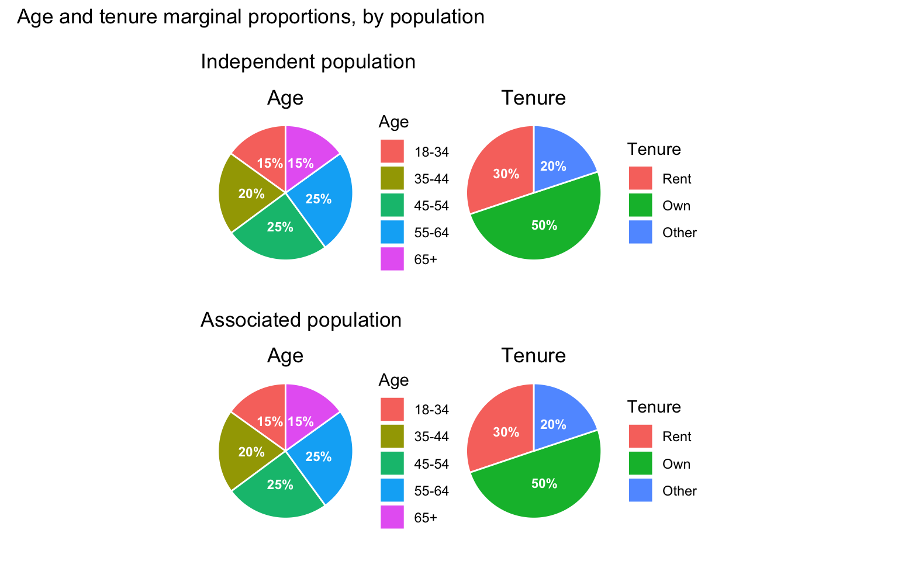
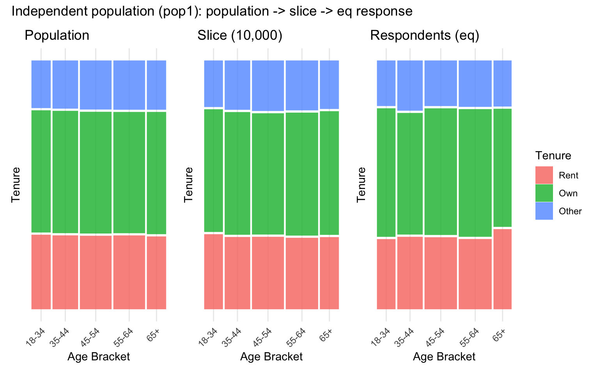
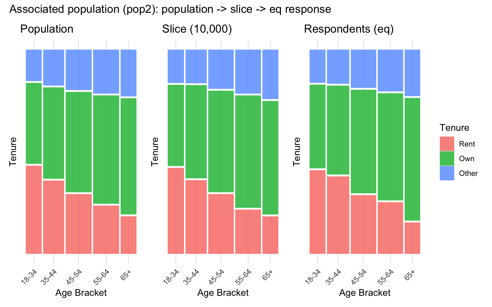
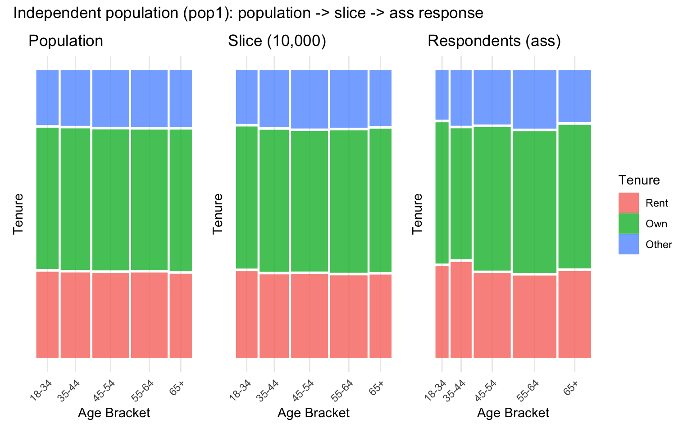
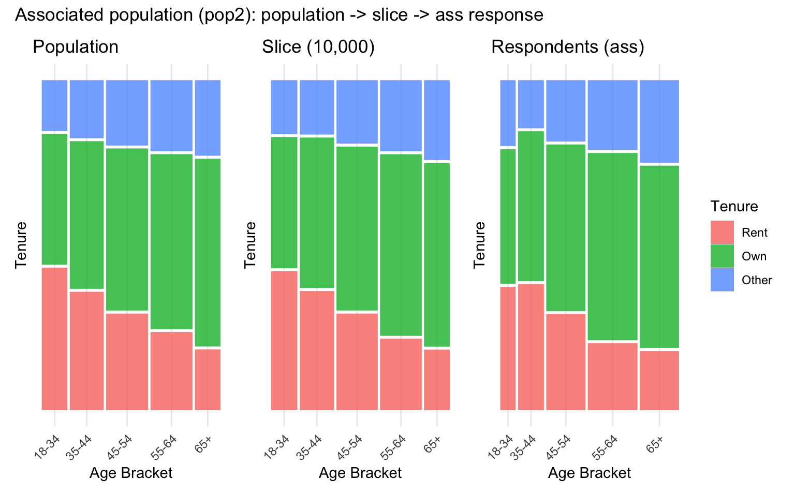
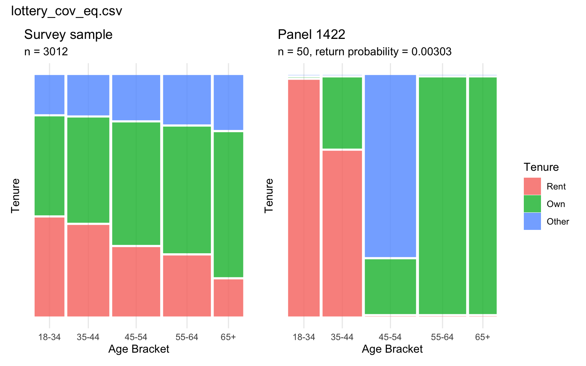
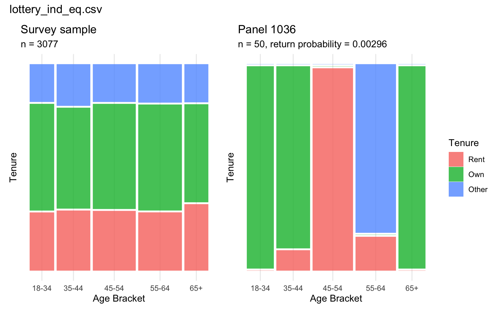

4 Results
4.1 The problem with current visualisations
Before turning to this thesis’s main results, it is worth demonstrating directly why mosaic plots – rather than the pie charts (or equivalent bar charts) that commonly accompany a sample or panel’s reported composition in current sortition practice – are used throughout this chapter, rather than simply asserting it (Chapter 3).
Figure 4.1 uses this thesis’s own independent and associated populations (sim_data2, sim_data2_cov) to make the point concrete: the raking procedure used to build the associated population restores the independent population’s marginals while retaining the age-renting association introduced beforehand (Chapter 3), so the largest gap between the two populations’ marginal proportions, across any single age bracket or tenure category, is only 0.02 percentage points – attributable to sampling noise alone.
Yet the two populations are not the same: the associated population carries a genuine, and statistically detectable (Table 4.1), negative association between age and renting, while the independent population has none at all. A pie chart – or a bar chart, which encodes exactly the same single-variable information in a different shape – has no visual channel available to show this: it can only display one categorical variable’s marginal distribution at a time, so two variables each need their own, entirely separate chart, and nothing in either chart can reveal how the two co-occur. A practitioner shown only the pie charts in Figure 4.1 would have no way of telling the independent and associated populations apart, despite one holding a materially different – and, as Section 4.3 goes on to show, selection-relevant – relationship between age and tenure than the other. The mosaic plots used throughout the remainder of this chapter (Chapter 3) exist specifically to close this gap, representing both variables’ marginal distributions and their joint, intersectional distribution within a single figure.
4.2 Simulation visualisations
Simulation pipeline: population, slice and respondents (equal-chance case)


Figure 4.2 and Figure 4.3 trace each population’s age-tenure structure across the three pipeline stages under the equal-chance response case. Both populations skew towards upper-middle age and a higher frequency of homeownership than other categories. As the captions show, each population’s age-tenure relationship (or lack of one) carries through essentially unchanged across all three stages, confirming that neither random slicing nor equal-chance response meaningfully disturbs either population’s underlying structure.
Simulation pipeline: population, slice and respondents (age-associated case)


Figure 4.4 and Figure 4.5 repeat the same three-stage pipeline, but with response likelihood now rising with age rather than being equal across brackets. Unlike the equal-chance case, the age-tenure structure is no longer preserved unchanged once respondents are reached, as the captions show: an association between age and response probability – entirely independent of any association between age and tenure in the underlying population – is sufficient on its own to shift the overall age composition, and therefore the intersections present, in the final respondent sample, compounding with rather than replacing any existing age-tenure relationship in the population it is drawn from.
Quantifying association across the pipeline
The mosaic patchworks above show the age-tenure association visually; Table 4.1 quantifies it at every stage, using a chi-squared test of independence and Cramer’s V as an effect-size measure of how strong that association is.
| Population | Response case | Stage | n | Chi-sq | df | p-value | Cramer’s V |
|---|---|---|---|---|---|---|---|
| Independent (pop1) | – | Population | 100000 | 5.2 | 8 | 0.735 | 0.005 |
| Independent (pop1) | – | Slice (10,000) | 10000 | 2.3 | 8 | 0.969 | 0.011 |
| Independent (pop1) | eq | Respondents | 3077 | 4.0 | 8 | 0.856 | 0.026 |
| Independent (pop1) | ass | Respondents | 3579 | 6.6 | 8 | 0.584 | 0.030 |
| Associated (pop2) | – | Population | 100000 | 3148.2 | 8 | < .001 | 0.125 |
| Associated (pop2) | – | Slice (10,000) | 10000 | 341.9 | 8 | < .001 | 0.131 |
| Associated (pop2) | eq | Respondents | 3012 | 103.4 | 8 | < .001 | 0.131 |
| Associated (pop2) | ass | Respondents | 3457 | 121.1 | 8 | < .001 | 0.132 |
Table 4.1 confirms what Figure 4.2 through Figure 4.5 show visually: an age-tenure association that is genuinely absent in the independent population, not merely undetected, and one that is neither diluted by slicing nor meaningfully inflated by either response case in the associated population – the age-associated case’s effect shows up mainly as a shift in the respondents’ age composition (Figure 4.4, Figure 4.5), not as a change in the strength of the age-tenure relationship itself. One caveat applies to the independent population’s p-values specifically: with population and slice sample sizes in the tens of thousands, even this chi-squared test has the power to detect very small deviations from independence, so the consistently non-significant results here reflect a genuine absence of association, not a lack of statistical power.
4.3 Panel-level association evaluation
Overview across lottery files
| Lottery file | Panels | Sample assoc. p | Sample Cramer’s V | Prop. significantly different | |
|---|---|---|---|---|---|
| 4 | lottery_ind_eq.csv | 1516 | 0.856 | 0.026 | 1.000 |
| 3 | lottery_ind_ass.csv | 3483 | 0.584 | 0.030 | 0.998 |
| 2 | lottery_cov_eq.csv | 1867 | 0.000 | 0.131 | 1.000 |
| 1 | lottery_cov_ass.csv | 2981 | 0.000 | 0.132 | 0.999 |
Table 4.2 summarises the results across all four lottery files. In the associated population, the survey sample itself retains a clearly detectable age-tenure association (Cramer’s V around 0.13), consistent with the negative age-renting relationship built into the population design. In the independent population, by contrast, the sample-level association is negligible and statistically indistinguishable from zero (both p > 0.5), exactly as expected given no association was introduced between age and tenure at the population level.
Despite this contrast in the underlying samples, the proportion of panels flagged as holding a significantly different association from their sample is strikingly similar – and strikingly high – across all four files: between 99.8% and 100%. In other words, essentially every panel Panelot could possibly return, under either population structure and either response-rate case, exhibits an age-tenure relationship detectably different from the sample it was drawn from – including in the independent population, where there is no true association for a panel to even distort.
Splitting this range apart by file shows little further structure: the two equal-chance lotteries (lottery_cov_eq.csv, lottery_ind_eq.csv) each flag 100% of their feasible panels, while the two age-associated lotteries fall only fractionally short, at 99.93% and 99.77% respectively – despite these two files containing roughly twice as many feasible panels (2981 and 3483, against 1867 and 1516), and therefore more opportunities for an occasional panel to be drawn that does not diverge from its sample. Neither population structure nor response case moves the result in a way that a difference of a few feasible panels out of several thousand cannot already explain – the distortion identified here looks like a property of the quota mechanism itself, not of any particular population or response structure it happens to be applied to.
This saturation pattern also speaks to a design concern about the panel-versus-sample test raised in Section 3.2.5: because Panelot’s quota constraints are set from each category’s population marginal distribution rather than the survey sample’s own marginals, a panel could in principle diverge from its sample simply because the sample’s composition has drifted from the population’s, rather than because of anything specific to the selection mechanism. Under equal-chance response, however, the survey sample’s age marginal already matches the population’s closely (Figure 4.2, Figure 4.3), leaving barely any population-versus-sample gap for population-based quotas to correct – yet the equal-chance files above are flagged as different at least as often as the age-associated ones, where the sample’s marginal has genuinely drifted from the population’s (Figure 4.4, Figure 4.5). If population correction were driving the divergence, equal-chance panels should have been flagged less often, not equally or more. Together with the test’s own design – which already allows panel and sample to differ freely on each marginal without that alone counting as significant (Section 3.2.5) – this confirms that the near-total divergence documented here reflects the quota mechanism leaving the joint age-tenure distribution unconstrained, rather than any population-versus-sample drift.
Comparison against the random-sampling benchmark
| Lottery file | Panels | Prop. sig. diff. (panels) | Median V (panels) | Prop. sig. diff. (SRS) | Median V (SRS) |
|---|---|---|---|---|---|
| cov_eq | 1867 | 1.000 | 0.878 | 0.084 | 0.301 |
| cov_ass | 2981 | 0.999 | 0.878 | 0.082 | 0.300 |
| ind_eq | 1516 | 1.000 | 0.876 | 0.094 | 0.274 |
| ind_ass | 3483 | 0.998 | 0.873 | 0.084 | 0.273 |
Table 4.3 repeats the comparison introduced in Section 3.2.5 across all four lottery files, rather than the single associated/equal-chance case alone. Actual sortition panels are flagged as significantly different from their sample 99.8-100% of the time, against only 8.2-9.4% for equivalently sized random samples – modestly above the nominal 5% false-positive rate expected under the null (plausibly the homogeneity test’s asymptotic approximation being somewhat liberal at this cell count, rather than genuine divergence from random sampling). Median within-group Cramer’s V tells the same story: panels sit around 0.87-0.88, against 0.27-0.3 seen from random draws, in every file regardless of population or response case. Because the benchmark result holds uniformly, rather than being specific to the associated/equal-chance file used as the illustrative case above, the explanation cannot be population- or response-case-specific either – reinforcing that it is Panelot’s quota mechanism, not sampling variability at panel size or any one simulated condition, driving the divergence documented in Table 4.2.
Illustrative example

Figure 4.6 makes explicit what the aggregate figures above describe in summary: the smooth, gradually strengthening sample-level relationship between age and renting gives way to a considerably more extreme, blocky panel-level pattern, despite the panel satisfying the same marginal quotas as the sample it was ostensibly drawn to represent.

Figure 4.7 shows the same comparison for the independent population. The panel is, if anything, more extreme than the associated-population example: the within-panel test gives a Cramer’s V of 0.9, versus 0.03 for the sample it was drawn from. Because this panel’s distorted joint structure cannot be attributed to a genuine association it is “exaggerating” – there is none to exaggerate in the independent population – it most directly demonstrates that the within-panel association test is picking up an artefact of the selection mechanism, not a real signal faithfully (if imperfectly) carried through from the sample.
Summary
Across all four simulated conditions, satisfying Panelot’s marginal quotas on age and tenure did not translate into a panel whose joint age-tenure structure resembled its survey sample’s: essentially every feasible panel was flagged as significantly different from the sample, at a rate far beyond what panel size alone could explain, and this held regardless of whether the underlying population carried a genuine age-tenure association or response was skewed by age. Marginal quota satisfaction – the only form of representativeness that a current sortition tool like Panelot reports to a practitioner – is therefore not a reliable proxy for intersectional representativeness in this simulation, and the gap between the two looks like a structural consequence of leaving the joint distribution unconstrained, rather than an artefact of this thesis’s particular panel size or association strengths. This divergence is not attributable to panels merely correcting toward population marginals where the sample itself has drifted – a possibility already ruled out above, both by the panel-versus-sample test’s design and by the data (Section 4.3; Chapter 3). Chapter 5 introduces Intersection Inspector, a tool built directly in response to this marginal-versus-intersectional gap, which displays a panel’s intersectional association alongside its marginal quota satisfaction so that this kind of distortion is visible to a practitioner before a panel convenes, rather than only to a reader of this thesis after the fact.